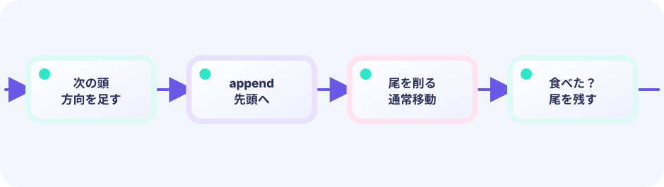

PRESENTATION STATE
visualFromは次tickまでの一時コピー
保存対象はbodyだけ。visualFromとstepTweenは見せ終えたら次の移動で上書きできる派生状態です。
★★★★★ / PLAYABLE
Snakeの正解は整数マス列です。そこを小数座標へ変えると自己衝突や餌判定が壊れます。移動tickの直前bodyをvisualFromへコピーし、次tickまでのProgressで各節を補間します。さらに前・現在・次の三セルから直線か角かを導出し、円と太線で切れ目のない身体を描きます。
このコースも LEVEL 01 の Update（数字）とDraw（絵）の独立した境界の上にあります。ここでは同じ状態を別の描き方へ投影する方法を一段深く扱います。
ADVANCED FX の設計原則
updatePlay() は衝突・得点・盤面などの正解を先に確定し、結果を値やイベントとして一度だけ渡します。演出側はその事実から補間・姿勢・残像・粒子の時間を進めます。Draw は状態を読むだけで、得点も座標も書き換えません。この境界があるから、派手な画面とGPUなしで試せるユニットテストを両立できます。
PATTERN A07 / DISCRETE INTERPOLATION
滑らかさのため盤面座標をfloatにすると、同一セル・自己衝突・リプレイの答えが曖昧になります。
PRESENTATION STATE
保存対象はbodyだけ。visualFromとstepTweenは見せ終えたら次の移動で上書きできる派生状態です。
TEST CONTRACT
PLAYABLE / LIVE GO + マウス
頭はセル間を滑り、胴体は太線と丸い節で連続します。餌は脈動し、食べた瞬間だけ成長のリングと粒が出ます。
はじめて読む人へ
セルは方眼紙の一マス、体セルはヘビの体があるマス。キラキラは食べた場所で短時間だけ動くFXです。[]Cellは体のマス一覧。Updateで頭を足して尾を外し、Drawで食べ物→体→粒を描きます。 Go用語メモ：整数型（int）は小数を持たない数、浮動小数点型（float32/float64）は小数を持てる数、typeはデータの箱の種類を決める言葉、funcは処理をひとまとめにする関数の印です。[]TはTを順番に並べるリスト、appendはその末尾へ一つ足す命令です。Updateは数字と状態を進め、Drawはその結果を絵にします。
このページの1本
説明と次のコードを対応させてから、ゲームで変化を確かめよう。
drawFood(); drawBody(); fx.Draw()
DEEP DIVE / DISCRETE INTERPOLATION
ルール更新は従来どおり一マス跳びます。表示だけがold→newを9フレームで移動します。SegmentPoseは隣接関係からStraight / Cornerを返す純粋関数なので、spriteIndexをbodyへ保存する必要がありません。
bodyとfoodの比較はCell同士。
body []cell
移動直前の各節をvisualFromへ写す。
visualFrom []cell
前・現在・次で直線／角を決める。
PoseForSegment
TRACE IT / RULE → MOTION → PIXELS
ルールは8Fごとに一マス、表示Tweenも8Fで完了させます。補間途中でも自己衝突は常に整数bodyだけで判定します。
IN THE DEMO
Updateの離散性を捨てず、Draw座標だけLerpします。これが倉庫番やタクティクスにも続く基本です。
oldBody := append([]cell(nil), g.body...)
g.body = commitGridStep(g.body, nextHead) // integer truth
g.visualFrom = originsFor(g.body, oldBody)
g.stepTween = vfxmotion.NewTween(ruleTickFrames)
drawX := vfxmotion.Lerp(oldX, newX, g.stepTween.Progress())TEST THE CONTRACT
水平、垂直、左上角などの三セルを渡し、SegmentKindとRotationを比較します。補間の0と1も厳密に確認します。
FAILURE MODE
0.4マス移動中の頭を丸めると、FPSや丸め方で自己衝突の結果が変わります。
DESIGN PAYOFF
チェス駒、SRPG、ローグライクも、離散状態＋表示補間ならルールを単純に保てます。
FEEDBACK